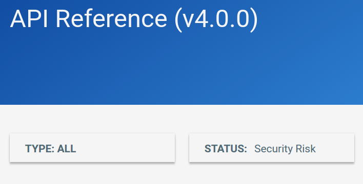
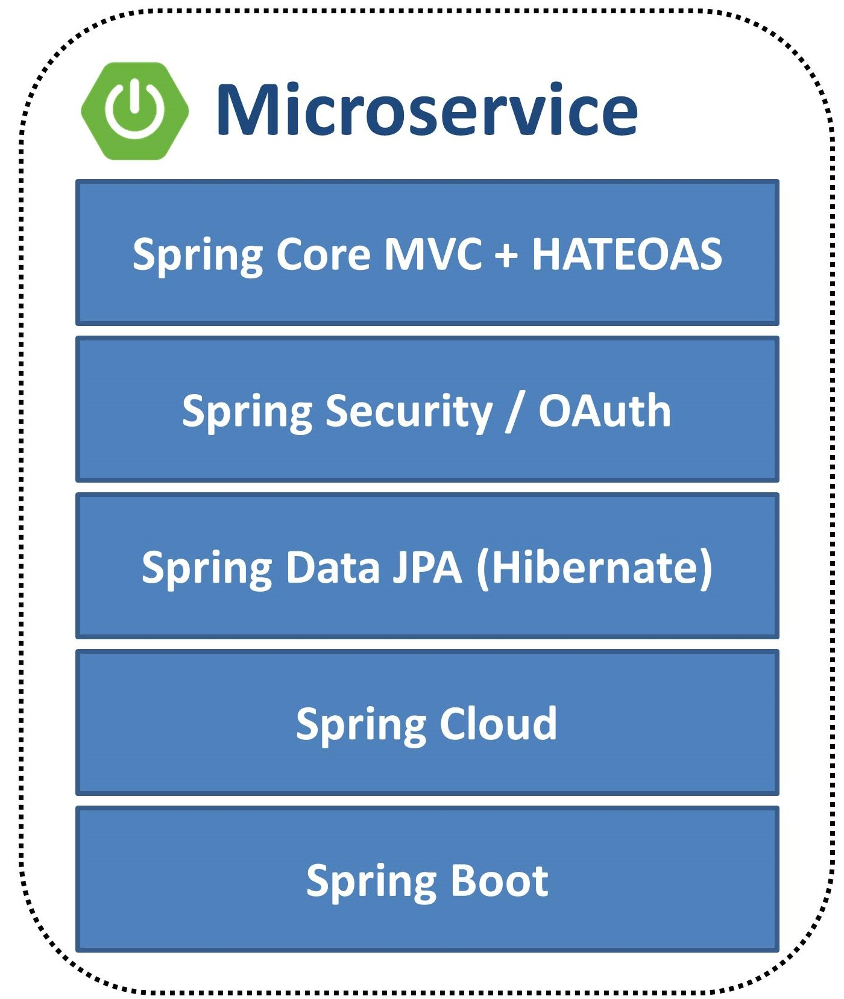
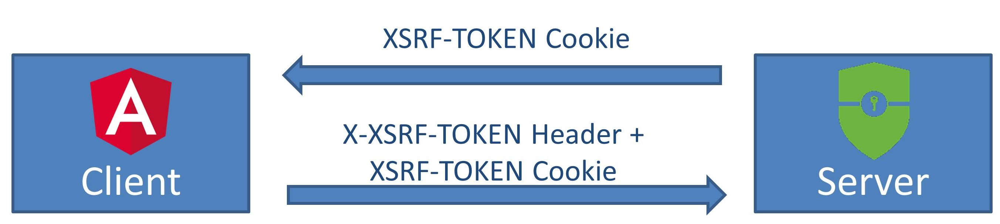

Sicher in die Cloud
mit Angular und Spring Boot

9. Mai 2017
Andreas Falk
http://www.novatec-gmbh.de
andreas.falk@novatec-gmbh.de
@NT_AQE, @andifalk
Architecture / Threat Model

https://github.com/OWASP/Top10


Angular
AngularJS = Angular 1
Angular = Angular 2.x, 4.x, 5.x, ...
A3: Cross-Site Scripting (XSS)
Angular JS Security
 https://angularjs.blogspot.de/2016/09/angular-16-expression-sandbox-removal.html
https://angularjs.blogspot.de/2016/09/angular-16-expression-sandbox-removal.html
Angular Security
“...The basic idea is to implement automatic, secure escaping for all values that can reach the DOM... By default, with no specific action for developers, Angular apps must be secure...”https://github.com/angular/angular/issues/8511
Angular XSS Protection
Angular Template = Safe
Input Values = Unsafe
Angular Component
Typescript
@Component({
selector: 'app-root',
templateUrl: 'app.component.html',
styleUrls: ['app.component.css']
})
export class AppComponent {
untrustedHtml:string =
'<em><script>alert("hello")</script></em>';
}
Angular Template
HTML Bindings
Binding of potentially dangerous HTML-snippets
Encoded HTML snippet
{{untrustedHtml}}
Sanitized HTML snippet
Unsafe Angular API's
ElementRef: Direct access to DOM!
DomSanitizer: Deactivates XSS-Protection!
Do NOT use!
https://angular.io/docs/ts/latestDemo
Backend
A1: Injection
Spring MVC + Spring Data JPA
Prevent Injections using Bean Validation
@Entity
public class Person extends AbstractPersistable<Long> {
@NotNull
@Pattern(regexp = "^[A-Za-z0-9- ]{1,30}$")
private String lastName;
@NotNull
@Enumerated(EnumType.STRING)
private GenderEnum gender;
...
}
Spring Data JPA
Prevent SQL-Injection using Prepared Statements
@Query(
"select u from User u where u.username = "
+ " :username and u.password = :password")
User findByUsernameAndPassword(
@Param("username") String username,
@Param("password") String password);
A8: Cross-Site Request Forgery (CSRF)
Double Submit CSRF Token
Spring Security
Secure By Default
- Authentication required for all HTTP endpoints
- Session Fixation Protection
- Session Cookie (HttpOnly, Secure)
- CSRF Protection
- Security Response Header
Spring Security CSRF Configuration
Angular Support
@Configuration
public class WebSecurityConfiguration
extends WebSecurityConfigurerAdapter {
@Override
protected void configure(HttpSecurity http)
throws Exception {
…
http
.csrf().csrfTokenRepository(
CookieCsrfTokenRepository.withHttpOnlyFalse()
);
}
Who am I?
A2: Broken Authentication and Session Management
A10: Underprotected APIs
Authentication (Stateful or Stateless?)
| Session Cookie | Token (Bearer, JWT) |
|---|---|
| With each Request | Manually as Header |
| Potential CSRF! | No CSRF possible |
| Persisted when unloading DOM | No automatic persistence |
| One domain | Cross domain (CORS) |
| Sensitive Information (HTTPS) | Sensitive Information (HTTPS) |
OAuth 2
OpenID Connect

OAuth 2 / OpenId Connect Resource
@EnableResourceServer
@Configuration
public class OAuth2Configuration {
@Bean
public JwtAccessTokenConverterConfigurer
jwtAccessTokenConverterConfigurer() {
return new MyJwtConfigurer(...);
}
static class MyJwtConfigurer
implements JwtAccessTokenConverterConfigurer {
@Override
public void configure(
JwtAccessTokenConverter converter) {...}
}
}
Implicit Grant
OAuth 2.0 Threat Model and Security Considerations
Client Credentials Grant
Resource Owner Grant
Do NOT use!
What can I access?
A4: Broken Access Control
A10: Underprotected APIs
Authorization of REST API
Role based
public class UserBoundaryService {
@PreAuthorize("hasRole('ADMIN')")
public List<User> findAllUsers() {...}
}
Authorization of REST API
Permission based
public class TaskBoundaryService {
@PreAuthorize("hasPermission(#taskId, 'TASK', 'WRITE')")
public Task findTask(UUID taskId) {...}
}
Authorization of REST API
Integrationtest
public class AuthorizationIntegrationTest {
@WithMockUser(roles = "ADMIN")
@Test
public void verifyFindAllUsersAuthorized() {...}
@WithMockUser(roles = "USER")
@Test(expected = AccessDeniedException.class)
public void verifyFindAllUsersUnauthorized() {...}
}
Demo
What about the Cloud?
Good old friends ...und more...
CSRF XSS SQL Injection Session Fixation Vulnerable Dependencies Weak Passwords Broken Authorization Sensitive Data ExposureDistributed DoS
Economic DoS
Weak Passwords
So what has been changed
in the Cloud?
Rotate, Repair, Repave
Justin Smith
“What if every server inside my data center had a maximum lifetime of two hours? This approach would frustrate malware writers...”
What about application configuration and sensible data in the cloud?
Manage distributed configuration and secrets with Spring Cloud and Vault
Friday 19th May, 2017 6:00pm to 6:50pm
One more thing...
A7: Insufficient Attack Protection
http://www.novatec-gmbh.de http://blog.novatec-gmbh.de
andreas.falk@novatec-gmbh.de

@NT_AQE, @andifalk